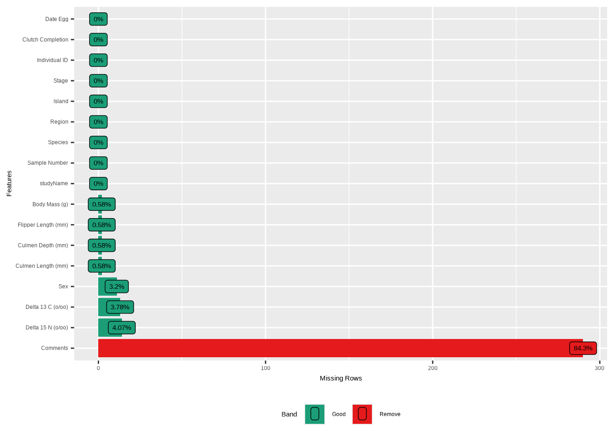
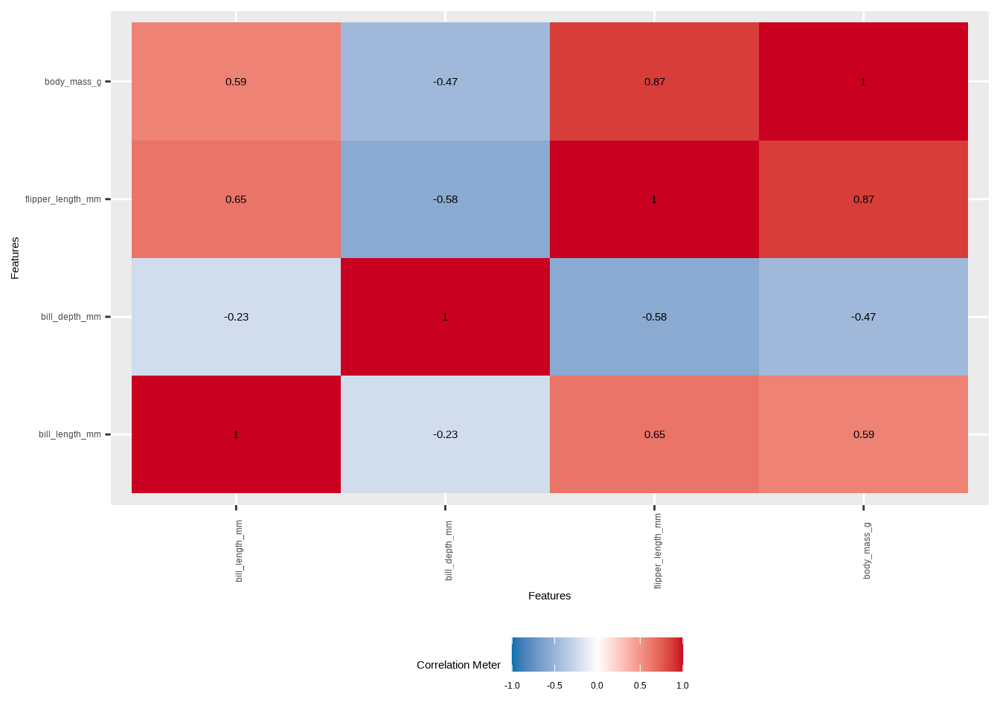

Chapter 4 Explorative Datenanalyse (EDA)
In diesem Kapitel beginnen wir mit der Datenanalyse. Ein entscheidender Schritt bei der Analyse von Daten ist die explorative Datenanalyse. Sie beschreibt den Prozess der Untersuchung von Datensätzen, um deren wesentliche Merkmale zusammenzufassen. Dieser Schritt kann dabei helfen, die Daten zu verstehen, ihre Qualität zu überprüfen, Muster und Trends frühzeitig zu erkennen und erste Einblicke zu gewinnen!
Da R eine speziell für die Statistik entwickelte Software ist, stehen uns viele hochwertige Bibliotheken zur Durchführung von EDA zur Verfügung. Der Datensatz, den wir für diesen Teil verwenden werden, heißt palmerpenguins. Es handelt sich um einen Datensatz über Pinguinarten und ihre Merkmale.
pacman::p_load("summarytools", "SmartEDA", "skimr",
"naniar", "gtsummary", "dlookr",
"DataExplorer", "psych", "ggplot2",
"palmerpenguins", "dplyr", "tidyr", "corrplot")
penguins <- na.omit(penguins)
pinguine_raw <- penguins_raw4.1 Standard-Deskriptivstatistik
4.1.1 Lagemaße
Wie der Name schon andeutet, helfen uns Lagemaße dabei, die Wahrscheinlichkeitsverteilung der Daten, ihren Mittelpunkt und typische Werte zu verstehen. Die drei gebräuchlichsten Lagemaße sind das arithmetische Mittel, der Median und der Modus.
Modus: Die am häufigsten vorkommende Zahl
Mittelwert: Die Summe aller Werte geteilt durch die Gesamtanzahl der Werte
Median: Die mittlere Zahl in einem sortierten Datensatz
4.1.1.1 Modus
Der Modus ist wahrscheinlich das einfachste aller Maße: Er ist definiert als die am häufigsten vorkommende Zahl aller Beobachtungen. Wir können den Modus nicht direkt berechnen, aber es gibt einen Weg. Zunächst betrachten wir alle eindeutigen Werte unserer Beobachtungen mit der Funktion unique(), dann zählen wir das Vorkommen jedes eindeutigen Wertes mit tabulate(), und schließlich verwenden wir die Funktion which.max(), um den häufigsten eindeutigen Wert zu ermitteln:
uniq_werte <- unique(penguins$bill_length_mm) # Eindeutige Werte ermitteln
freq <- tabulate(match(penguins$bill_length_mm, uniq_werte)) # Häufigkeiten zählen
uniq_werte[which.max(freq)] # Den eindeutigen Wert mit den meisten Vorkommen ermitteln## [1] 41.14.1.1.2 Mittelwert
Schauen wir uns zunächst die Formel zur Berechnung des Mittelwerts an:
\[ \bar{x} = \frac{\sum{x_i}}{n} \]
dabei gilt:
\(\bar{x}\) ist unser Mittelwert
\(\sum{x_i}\) ist die Summe aller unserer Beobachtungen
\(n\) ist die Anzahl aller unserer Beobachtungen
Wir könnten das von Hand berechnen, oder wir verwenden einfach die eingebaute Funktion mean():
## [1] 43.992794.1.1.3 Median
Stell dir vor, du sortierst alle deine Daten vom niedrigsten zum höchsten Wert und zeigst dann auf den Wert, der genau 50 % aller Werte zu seiner Linken und die anderen 50 % zu seiner Rechten hat – das wäre der Median. Das funktioniert zumindest dann, wenn die Verteilung eine gerade Anzahl von Beobachtungen hat. Man kann den Median aber auch für eine ungerade Anzahl von Beobachtungen berechnen. Schauen wir uns beide Formeln an:
\(X_{(\frac{n+1}{2})}\) für eine gerade Anzahl von n
\(\frac{1}{2}X_{(\frac{n}{2})} + X_{(\frac{n}{2} + 1)}\) für eine ungerade Anzahl von n
Auch hier könnten wir das von Hand berechnen, oder wir verwenden einfach die Funktion median():
## [1] 44.54.1.2 Streuungsmaße
In der Statistik beschreiben Streuungsmaße das Ausmaß, in dem eine Verteilung einer Variablen gestreckt oder gestaucht ist. Mit anderen Worten helfen sie dabei, die Streuung unserer Verteilungen zu messen.
4.1.2.1 Interquartilsabstand (IQR)
Erinnerst du dich an den Boxplot aus dem Kapitel zur Datenvisualisierung? Er soll den sogenannten Interquartilsabstand (IQR) darstellen. Dieser ist definiert als die Differenz zwischen dem 75. Perzentil (oder dritten Quartil) und dem 25. Perzentil (oder dem ersten Quartil). Die Verteilung wird dabei in vier gleich große Bereiche aufgeteilt, die durch drei Punkte voneinander getrennt sind: das erste Quartil, bezeichnet als \(Q_1\) (auch unteres Quartil genannt), das zweite Quartil, das dem Median entspricht und als \(Q_2\) bezeichnet wird, sowie das dritte Quartil, bezeichnet als \(Q_3\) (auch oberes Quartil genannt). Die Formel lautet:
\[ IQR = Q_3 - Q_1 \]
In R können wir den Interquartilsabstand (IQR) mit der Funktion IQR() berechnen. Von Hand würden wir so vorgehen:
Daten aufsteigend sortieren.
Die Daten in vier gleiche Teile aufteilen (Quartile).
Q1 (erstes Quartil, 25. Perzentil) und Q3 (drittes Quartil, 75. Perzentil) bestimmen.
Beachte, dass die Daten aufgrund ihrer Größe nicht immer exakt in vier gleiche Teile aufgeteilt werden können. In solchen Fällen werden Quartile durch verschiedene statistische Methoden (z. B. Tukeys Scharniere) angenähert.
## [1] 9.14.1.2.2 Varianz
In der Statistik ist die Varianz der Erwartungswert der quadrierten Abweichung vom Mittelwert unserer Zufallsvariablen. Das Konzept des Mittelwerts wird klarer, wenn wir die Formel aufschlüsseln:
\[ s² = \frac{\sum(x_i - \bar{x})²}{n-1} \]
dabei gilt:
der Index i läuft über die Beobachtungen (Befragte, Länder,…), i = 1,…,n
\(x_i\) sind unsere Beobachtungen
\(\bar{x}\) ist der Mittelwert unserer Verteilung
\(n\) ist die Anzahl der Beobachtungen
Besonders interessant ist der Zähler der Formel \(\sum(x_i - \bar{x})²\), da er eine interessante Technik verwendet:
Stell dir vor, unsere Daten sind auf einer Dimension angeordnet und irgendwo in der Mitte befindet sich unser Mittelwert.
Nun stell dir vor, wir würden die Differenzen berechnen und sie ohne Quadrierung aufsummieren.
Du siehst, dass Abstand 1 den Wert -3 und Abstand 2 den Wert 4 hätte – in Summe ergibt das 0,8, aber das ist sicher nicht der Abstand zwischen diesen beiden Punkten. Hier kommt die Quadrierung ins Spiel: Jede quadrierte Zahl ist positiv, dadurch wird aus -3 der Wert 9 und aus 4 der Wert 16, sodass die Differenzen summiert werden können und 24 ergeben.
In R können wir das ganz einfach mit der Funktion var() berechnen:
## [1] 29.90633Wir erhalten 29,9 – und das Problem bei der Varianz besteht darin, dass die Quadrierungstechnik zu einem Interpretationsproblem führt: Wir können die Daten nicht wirklich interpretieren, da die ursprüngliche Einheit verloren geht. Wenn unsere Daten beispielsweise in Metern vorliegen, würde die Varianz in Quadratmetern angegeben. Dieses Problem lässt sich mit dem nächsten Maß lösen: der Standardabweichung.
4.1.2.3 Standardabweichung
Die Standardabweichung ist die Quadratwurzel der Varianz. Sie beschreibt das Ausmaß der Streuung der Werte einer Variablen um ihren Mittelwert. Eine niedrige Standardabweichung weist auf eine enge Streuung der Werte um den Mittelwert hin, während eine hohe Standardabweichung bedeutet, dass die Werte über einen größeren Bereich verteilt sind.
Die Standardabweichung ist die Quadratwurzel der Varianz:
\[ s = \sqrt{s²} = \sqrt\frac{\sum(x_i - \bar{x})}{n-1} \]
Erinnerst du dich an unser Beispiel? Wir haben berechnet, dass die Summe der quadrierten Abstände 24 beträgt (9 + 16). Was passiert nun, wenn wir die Quadratwurzel der quadrierten Werte ziehen, bevor wir sie addieren? Wir erhalten 3 für Abstand 1 und 4 für Abstand 2. Für Abstand 2 hat sich nichts geändert, er behält seinen ursprünglichen Wert 4, aber Abstand 1 ist von -3 auf den positiven Wert 3 gewechselt. Nun können wir beide addieren und erhalten den Abstand 7.
Wenden wir das in R mit der Funktion sd() an:
## [1] 5.468668Der große Vorteil der Standardabweichung gegenüber der Varianz besteht darin, dass sie in der ursprünglichen Einheit interpretiert werden kann und damit ein intuitiveres Streuungsmaß darstellt.
4.1.3 Beziehungen zwischen Variablen
Es ist wichtig, einen wesentlichen Unterschied in der EDA zu verstehen. Es gibt Werte, die man einfach betrachtet und interpretiert, wie die bisher vorgestellten Maße. Auf der anderen Seite gibt es Maße, die die Beziehung zwischen Variablen untersuchen und analysieren, wie diese miteinander interagieren. Im Folgenden betrachten wir zwei Methoden dazu.
4.1.3.1 Kreuztabellen / Kontingenztabellen
##
## Biscoe Dream Torgersen
## Adelie 44 55 47
## Chinstrap 0 68 0
## Gentoo 119 0 0## Cross-Tabulation, Row Proportions
## species * island
## Data Frame: penguins
##
## ----------- -------- -------------- -------------- ------------ --------------
## island Biscoe Dream Torgersen Total
## species
## Adelie 44 ( 30.1%) 55 ( 37.7%) 47 (32.2%) 146 (100.0%)
## Chinstrap 0 ( 0.0%) 68 (100.0%) 0 ( 0.0%) 68 (100.0%)
## Gentoo 119 (100.0%) 0 ( 0.0%) 0 ( 0.0%) 119 (100.0%)
## Total 163 ( 48.9%) 123 ( 36.9%) 47 (14.1%) 333 (100.0%)
## ----------- -------- -------------- -------------- ------------ --------------|
island
|
Total | |||
|---|---|---|---|---|
| Biscoe | Dream | Torgersen | ||
| species | ||||
| Adelie | 44 | 55 | 47 | 146 |
| Chinstrap | 0 | 68 | 0 | 68 |
| Gentoo | 119 | 0 | 0 | 119 |
| Total | 163 | 123 | 47 | 333 |
4.1.3.2 Korrelation
Korrelation ist ein Oberbegriff für jede statistische Beziehung – ob kausal oder nicht – zwischen zwei Zufallsvariablen oder bivariaten Daten. Die drei wichtigsten Korrelationsmaße sind nach ihren Erfindern benannt: Pearsons Korrelation (oder einfach Pearsons r), Spearmans Rangkorrelation (oder einfach Spearmans Rho) und Kendalls Tau.
Bevor wir fortfahren, klären wir, was eine lineare Beziehung bedeutet: Wenn eine Beobachtung steigt oder fällt, verändert sich die entsprechende Variable auf eine proportionale und vorhersehbare Weise.
4.1.3.2.1 Pearsons Korrelation
Pearsons Korrelation misst die lineare Beziehung zwischen zwei kontinuierlichen Variablen. Dazu setzt sie eine Normalverteilung beider Variablen, eine lineare Beziehung und keine wesentlichen Ausreißer voraus.
Normalerweise sollte man diese Voraussetzungen vor der Berechnung einer Korrelation überprüfen, aber wir überspringen diesen Teil und schauen uns die Umsetzung in R an:
## [1] 0.5894511Die Interpretation von Pearsons r ist recht einfach: Das Ergebnis liegt immer zwischen +1 und -1, wobei +1 eine perfekte lineare Beziehung, 0 keinerlei Beziehung und -1 eine perfekte negative lineare Beziehung bedeutet.
In unserem Fall besteht mit r = 0,59 eine starke positive, lineare Beziehung zwischen beiden Variablen.
4.1.3.2.2 Spearmans Rangkorrelation
Spearmans Rangkorrelation, kurz Spearmans Rho, gibt an, ob ordinale oder kontinuierliche Variablen eine monotone Beziehung aufweisen. Das bedeutet: Wenn eine Variable steigt, steigt oder fällt die andere immer – aber nicht zwingend in einem konstanten Verhältnis, wie es bei einer linearen Beziehung der Fall wäre.
Sie hat andere Voraussetzungen: Ausreißer sind erlaubt, die Beziehung kann nichtlinear sein, die Daten können Rangwerte enthalten, und die Variablen müssen nicht normalverteilt sein.
Schauen wir uns an, wie sie in R berechnet wird:
## [1] 0.5764804Die Interpretation ist analog zu Pearsons r: +1 bedeutet eine perfekte positive monotone Beziehung, 0 bedeutet keine monotone Beziehung und -1 bedeutet eine perfekte negative monotone Beziehung.
Ein Spearmans Rho von 0,58 weist auf eine starke, positive, monotone Beziehung zwischen den beiden Variablen hin.
4.1.3.2.3 Kendalls Tau
Kendalls Tau misst die Stärke und Richtung des Zusammenhangs zwischen zwei Rangvariablen. Wir unterscheiden dabei zwischen zwei Arten von Beziehungen: konkordante und diskordante Beziehungen.
Eine konkordante Beziehung bedeutet, dass sich beide Datenpunkte in die gleiche Richtung bewegen.
Eine diskordante Beziehung bedeutet, dass wenn ein Datenpunkt steigt, der andere fällt (oder umgekehrt).
Berechnen wir Kendalls Tau:
## [1] 0.4277598Kendalls Tau wird folgendermaßen interpretiert: +1 bedeutet eine perfekte Übereinstimmung der Ränge, 0 bedeutet keinerlei Zusammenhang und -1 bedeutet eine perfekte Umkehrung der Ränge.
Unser Kendalls Tau weist auf eine hohe Rangübereinstimmung zwischen unseren beiden Variablen hin.
4.1.3.3 Korrelation grafisch darstellen
Der vorherige Abschnitt war recht theoretisch, aber es gibt auch schöne Möglichkeiten, Korrelationen grafisch darzustellen. Wir beginnen mit einem einfachen Streudiagramm:
ggplot(penguins, aes(x = bill_length_mm, y = body_mass_g)) +
geom_point(color = "#0077b6") +
labs(x = "Länge in mm",
y = "Körpermasse in g",
title = "Beziehung zwischen Länge (in mm) und Körpermasse (in g)") +
theme_bw()
Bei der Untersuchung von Beziehungen zwischen zwei Variablen sind Streudiagramme die Standardvisualisierung. Wie wir sehen, ist klar erkennbar, dass die Länge in mm möglicherweise positiv mit der Körpermasse in g zusammenhängt. Grundsätzlich gibt es drei Arten von linearen Beziehungen, und Streudiagramme sehen entsprechend aus:
set.seed(123)
n <- 100
df_cor <- data.frame(
x = rep(1:n, 3),
relationship = rep(c("Positiv", "Negativ", "Keine"),
each = n),
y = c(
(1:n) + rnorm(n, sd = 15), # starke positive Korrelation
(n:1) + rnorm(n, sd = 15), # starke negative Korrelation
rnorm(n, mean = 50, sd = 20) # keine Korrelation
)
)
# Reihenfolge der Faktorstufen festlegen
df_cor$relationship <- factor(df_cor$relationship,
levels = c("Positiv",
"Keine", "Negativ"),
labels = c("Positiv",
"Keine Korrelation",
"Negativ"))
# Plot erstellen
ggplot(df_cor, aes(x = x, y = y)) +
geom_point(color = "steelblue", size = 2) +
facet_wrap(~relationship, nrow = 1) +
labs(title = "Starke positive, negative und keine Korrelation",
x = "X", y = "Y") +
theme_bw(base_size = 18)
Mit Streudiagrammen in Kombination mit facet_wrap() lassen sich mehrere Korrelationen grafisch darstellen. Es gibt jedoch auch eine Möglichkeit, den Korrelationskoeffizienten zu berechnen und grafisch mit einem Korrelationsplot darzustellen. Ein Korrelationsplot kombiniert die Logik von Kontingenztabellen, Heatmaps und den Korrelationskoeffizienten.
Zunächst wird eine Korrelationsmatrix erstellt – eine Tabelle, die die paarweisen Korrelationskoeffizienten (typischerweise nach Pearson) zwischen mehreren numerischen Variablen zeigt. Jede Zelle der Matrix stellt die Stärke und Richtung der linearen Beziehung zwischen zwei Variablen dar. Ein Korrelationsplot ist dann eine visuelle Darstellung dieser Matrix, die häufig Farbverläufe oder Kreisgrößen verwendet, um Stärke und Richtung der Korrelationen anzuzeigen und Muster leichter erkennbar zu machen.
Berechnen wir ihn in R: Wir verwenden das Paket corrplot (es gibt auch andere Möglichkeiten, die ich später zeigen werde).
Zunächst reduzieren wir unseren Datensatz auf die Variablen, die wir miteinander korrelieren möchten.
Dann berechnen wir eine Korrelationsmatrix mit dem Befehl
cor().Schließlich rufen wir
corrplot()auf, übergeben den Datensatz, definieren die Methode (wir verwenden Farbe zur Darstellung der Korrelationsstärke) und den Typ ('full'(Standard),'upper'oder'lower'für die vollständige, untere oder obere Dreiecksmatrix).
# Schritt 1: Numerische Daten vorbereiten
penguins_numeric <- penguins %>%
select(bill_length_mm, bill_depth_mm, flipper_length_mm, body_mass_g) %>%
drop_na()
# Schritt 2: Korrelationsmatrix berechnen
corr_matrix <- cor(penguins_numeric)
# Schritt 3: Korrelationsmatrix plotten
corrplot(corr_matrix, method = "color")
Nun sehen wir auf elegante Weise die Korrelation zwischen den vier ausgewählten Variablen, die durch die Farbe dargestellt wird. Jede Zelle zeigt den Korrelationskoeffizienten der Variable in der jeweiligen Spalte und der jeweiligen Zeile.
Die Funktion corrplot() bietet weitere Gestaltungsmöglichkeiten:
corrplot(corr_matrix, method = "color", type = "upper",
addCoef.col = "black", tl.col = "black", tl.srt = 45)
Abschließend können wir die Methode auf "circle" ändern. Dadurch werden die Zellen nicht mehr einfarbig gefüllt, sondern ein Kreis um die Zahlen gezeichnet und mit der entsprechenden Farbe gefüllt. Die Größe des Kreises, also sein Radius, wird durch die Stärke der Korrelation bestimmt: Je näher der Koeffizient an null liegt, desto kleiner der Kreis:
corrplot(corr_matrix, method = "circle", type = "upper",
addCoef.col = "black", tl.col = "black", tl.srt = 45)
Wenn ich die Kreismethode verwende, zeige ich die Matrix lieber ohne Zahlen an – das sieht meiner Meinung nach besser aus und ist intuitiver als das vollständige Ausfüllen der Zeilen:

4.2 Arbeiten mit EDA-Paketen
Es gibt noch viele weitere Maße für die EDA, und natürlich muss man nicht jedes einzelne Maß von Hand berechnen – auch wenn das grundsätzlich möglich wäre. Im Folgenden stelle ich die beliebtesten Pakete für die EDA vor. Aus meiner Sicht sind sie alle im Grunde ähnlich, mit einigen Nuancen. Im Gespräch mit anderen R-Nutzern habe ich festgestellt, dass jeder irgendwie seine eigene EDA-Routine entwickelt hat. Daher empfehle ich, sich einen Überblick über alle diese Pakete zu verschaffen und seine eigene „EDA-Routine” zu finden.
4.2.1 psych
Das psych-Paket ist ein unverzichtbares Paket für Psychologen, und ich verwende seine Funktion describe() sehr gerne, da sie mit einer einzigen Codezeile eine Vielzahl deskriptiver Statistiken ausgibt:
## vars n mean sd median
## species* 1 333 1.92 0.89 2.0
## island* 2 333 1.65 0.71 2.0
## bill_length_mm 3 333 43.99 5.47 44.5
## bill_depth_mm 4 333 17.16 1.97 17.3
## flipper_length_mm 5 333 200.97 14.02 197.0
## body_mass_g 6 333 4207.06 805.22 4050.0
## sex* 7 333 1.50 0.50 2.0
## year 8 333 2008.04 0.81 2008.0
## trimmed mad min max range
## species* 1.90 1.48 1.0 3.0 2.0
## island* 1.57 1.48 1.0 3.0 2.0
## bill_length_mm 43.98 6.97 32.1 59.6 27.5
## bill_depth_mm 17.19 2.22 13.1 21.5 8.4
## flipper_length_mm 200.36 16.31 172.0 231.0 59.0
## body_mass_g 4159.46 889.56 2700.0 6300.0 3600.0
## sex* 1.51 0.00 1.0 2.0 1.0
## year 2008.05 1.48 2007.0 2009.0 2.0
## skew kurtosis se
## species* 0.16 -1.72 0.05
## island* 0.62 -0.85 0.04
## bill_length_mm 0.04 -0.90 0.30
## bill_depth_mm -0.15 -0.91 0.11
## flipper_length_mm 0.36 -0.98 0.77
## body_mass_g 0.47 -0.75 44.13
## sex* -0.02 -2.01 0.03
## year -0.08 -1.49 0.04# describe() kann auch auf einzelne Variablen angewendet werden
# psych::describe(penguins$bill_length_mm)Die Ausgabe der Funktion describe() ist eine zusammenfassende Tabelle mit grundlegenden Deskriptivstatistiken wie Mittelwert, Standardabweichung, Median und vielem mehr – eine praktische Abkürzung, sodass man nicht jedes Maß einzeln berechnen muss.
## Call:corr.test(x = penguins_numeric)
## Correlation matrix
## bill_length_mm bill_depth_mm
## bill_length_mm 1.00 -0.23
## bill_depth_mm -0.23 1.00
## flipper_length_mm 0.65 -0.58
## body_mass_g 0.59 -0.47
## flipper_length_mm body_mass_g
## bill_length_mm 0.65 0.59
## bill_depth_mm -0.58 -0.47
## flipper_length_mm 1.00 0.87
## body_mass_g 0.87 1.00
## Sample Size
## [1] 333
## Probability values (Entries above the diagonal are adjusted for multiple tests.)
## bill_length_mm bill_depth_mm
## bill_length_mm 0 0
## bill_depth_mm 0 0
## flipper_length_mm 0 0
## body_mass_g 0 0
## flipper_length_mm body_mass_g
## bill_length_mm 0 0
## bill_depth_mm 0 0
## flipper_length_mm 0 0
## body_mass_g 0 0
##
## To see confidence intervals of the correlations, print with the short=FALSE optionIm nächsten Schritt möchte ich euch die Funktion pairs.panels() zeigen. Sie erzeugt eine sehr interessante Visualisierung der Korrelationen zwischen den Variablen:

Das ist ein interessantes Raster aus verschiedenen Visualisierungstypen, die alle mit Korrelationen zusammenhängen. Beginnen wir mit dem einfachsten Element, der Diagonale.
- Die Diagonale zeigt ein Histogramm der Verteilungen unserer Eingabevariablen, ergänzt durch eine Linie, anhand derer wir prüfen können, ob die Verteilungen plausibel aussehen.
- Die Visualisierungen oben rechts zeigen die Korrelationskoeffizienten der jeweiligen zwei Variablen – ähnlich wie eine Korrelationsmatrix.
- Die Visualisierungen unten links sind Streudiagramme zwischen den zwei Variablen, in die eine Regressionsgerade eingezeichnet ist.
- Zusätzlich kann die Form der roten Linie (ein Loess-Smoother) zeigen, ob die Beziehung zwischen den beiden Variablen linear ist oder eine komplexere Form hat, z. B. gekrümmt oder s-förmig.
- Die Streudiagramme enthalten außerdem Korrelationsellipsen, die Stärke und Richtung der Beziehung visuell darstellen: schmale, geneigte Ellipsen weisen auf starke Korrelationen hin, während rundere Formen auf schwächere oder keine Korrelationen hindeuten.
Zusammen bietet dieses Raster einen umfassenden Überblick über sowohl die Verteilungen der einzelnen Variablen als auch die paarweisen Beziehungen zwischen ihnen.
4.2.2 skimr
Das skimr-Paket ist eine wunderbare Möglichkeit, einen Überblick über die Struktur unseres Datensatzes und grundlegende Statistiken zu erhalten – einschließlich einer Visualisierung der Verteilung der jeweiligen Variable. Die Hauptfunktion ist skim():
| Name | penguins |
| Number of rows | 333 |
| Number of columns | 8 |
| _______________________ | |
| Column type frequency: | |
| factor | 3 |
| numeric | 5 |
| ________________________ | |
| Group variables | None |
Variable type: factor
| skim_variable | n_missing | complete_rate | ordered | n_unique | top_counts |
|---|---|---|---|---|---|
| species | 0 | 1 | FALSE | 3 | Ade: 146, Gen: 119, Chi: 68 |
| island | 0 | 1 | FALSE | 3 | Bis: 163, Dre: 123, Tor: 47 |
| sex | 0 | 1 | FALSE | 2 | mal: 168, fem: 165 |
Variable type: numeric
| skim_variable | n_missing | complete_rate | mean | sd | p0 | p25 | p50 | p75 | p100 | hist |
|---|---|---|---|---|---|---|---|---|---|---|
| bill_length_mm | 0 | 1 | 43.99 | 5.47 | 32.1 | 39.5 | 44.5 | 48.6 | 59.6 | ▃▇▇▆▁ |
| bill_depth_mm | 0 | 1 | 17.16 | 1.97 | 13.1 | 15.6 | 17.3 | 18.7 | 21.5 | ▅▆▇▇▂ |
| flipper_length_mm | 0 | 1 | 200.97 | 14.02 | 172.0 | 190.0 | 197.0 | 213.0 | 231.0 | ▂▇▃▅▃ |
| body_mass_g | 0 | 1 | 4207.06 | 805.22 | 2700.0 | 3550.0 | 4050.0 | 4775.0 | 6300.0 | ▃▇▅▃▂ |
| year | 0 | 1 | 2008.04 | 0.81 | 2007.0 | 2007.0 | 2008.0 | 2009.0 | 2009.0 | ▇▁▇▁▇ |
Der Vorteil des skimr-Pakets besteht darin, dass es direkt deskriptive Statistiken berechnet und die fehlenden Werte für jede Variable im Datensatz anzeigt. Ich verwende diesen Befehl häufig, um mir einen ersten Überblick über unbekannte Datensätze zu verschaffen. Ich halte ihn eher für ein Werkzeug zur Datenerkundung als zur eigentlichen EDA – als erster Schritt kann er jedoch sehr nützlich sein.
4.2.3 summarytools
Wir steigen in das summarytools-Paket mit dem klassischen dfSummary()-Befehl ein, der die Struktur unseres Datensatzes zusammenfasst:
## Data Frame Summary
## penguins
## Dimensions: 333 x 8
## Duplicates: 0
##
## ----------------------------------------------------------------------------------------------------------------------
## No Variable Stats / Values Freqs (% of Valid) Graph Valid Missing
## ---- ------------------- ---------------------------- --------------------- --------------------- ---------- ---------
## 1 species 1. Adelie 146 (43.8%) IIIIIIII 333 0
## [factor] 2. Chinstrap 68 (20.4%) IIII (100.0%) (0.0%)
## 3. Gentoo 119 (35.7%) IIIIIII
##
## 2 island 1. Biscoe 163 (48.9%) IIIIIIIII 333 0
## [factor] 2. Dream 123 (36.9%) IIIIIII (100.0%) (0.0%)
## 3. Torgersen 47 (14.1%) II
##
## 3 bill_length_mm Mean (sd) : 44 (5.5) 163 distinct values . . : 333 0
## [numeric] min < med < max: . : : : : : (100.0%) (0.0%)
## 32.1 < 44.5 < 59.6 : : : : : :
## IQR (CV) : 9.1 (0.1) : : : : : : .
## . : : : : : : : .
##
## 4 bill_depth_mm Mean (sd) : 17.2 (2) 79 distinct values : 333 0
## [numeric] min < med < max: : : (100.0%) (0.0%)
## 13.1 < 17.3 < 21.5 : . : : : .
## IQR (CV) : 3.1 (0.1) . : : : : : :
## : : : : : : : . .
##
## 5 flipper_length_mm Mean (sd) : 201 (14) 54 distinct values : 333 0
## [integer] min < med < max: . : (100.0%) (0.0%)
## 172 < 197 < 231 : : : . .
## IQR (CV) : 23 (0.1) . : : : : : :
## : : : : : : : : :
##
## 6 body_mass_g Mean (sd) : 4207.1 (805.2) 93 distinct values : 333 0
## [integer] min < med < max: . : (100.0%) (0.0%)
## 2700 < 4050 < 6300 : : : :
## IQR (CV) : 1225 (0.2) : : : : : .
## . : : : : : :
##
## 7 sex 1. female 165 (49.5%) IIIIIIIII 333 0
## [factor] 2. male 168 (50.5%) IIIIIIIIII (100.0%) (0.0%)
##
## 8 year Mean (sd) : 2008 (0.8) 2007 : 103 (30.9%) IIIIII 333 0
## [integer] min < med < max: 2008 : 113 (33.9%) IIIIII (100.0%) (0.0%)
## 2007 < 2008 < 2009 2009 : 117 (35.1%) IIIIIII
## IQR (CV) : 2 (0)
## ----------------------------------------------------------------------------------------------------------------------Der große Vorteil dieses Befehls besteht darin, dass wir ihn in die Funktion view() einbetten können, um eine schön formatierte Tabelle zu erhalten:
## Output file written: /tmp/RtmpjdBJsj/file308e6d8d9aa0.htmlDas Paket enthält auch praktische Möglichkeiten, Häufigkeitstabellen für einzelne Variablen mit mehr Informationen als der standardmäßige table()-Befehl darzustellen:
## Frequencies
## penguins$species
## Type: Factor
##
## Freq % Valid % Valid Cum. % Total % Total Cum.
## --------------- ------ --------- -------------- --------- --------------
## Adelie 146 43.84 43.84 43.84 43.84
## Chinstrap 68 20.42 64.26 20.42 64.26
## Gentoo 119 35.74 100.00 35.74 100.00
## <NA> 0 0.00 100.00
## Total 333 100.00 100.00 100.00 100.00Wir können auch die Funktion descr() aus dem Paket verwenden, die uns die gängigsten deskriptiven Statistiken unserer Variablen im Datensatz anzeigt:
## Non-numerical variable(s) ignored: species, island, sex## Descriptive Statistics
## penguins
## N: 333
##
## bill_depth_mm bill_length_mm body_mass_g flipper_length_mm year
## ----------------- --------------- ---------------- ------------- ------------------- ---------
## Mean 17.16 43.99 4207.06 200.97 2008.04
## Std.Dev 1.97 5.47 805.22 14.02 0.81
## Min 13.10 32.10 2700.00 172.00 2007.00
## Q1 15.60 39.50 3550.00 190.00 2007.00
## Median 17.30 44.50 4050.00 197.00 2008.00
## Q3 18.70 48.60 4775.00 213.00 2009.00
## Max 21.50 59.60 6300.00 231.00 2009.00
## MAD 2.22 6.97 889.56 16.31 1.48
## IQR 3.10 9.10 1225.00 23.00 2.00
## CV 0.11 0.12 0.19 0.07 0.00
## Skewness -0.15 0.04 0.47 0.36 -0.08
## SE.Skewness 0.13 0.13 0.13 0.13 0.13
## Kurtosis -0.91 -0.90 -0.75 -0.98 -1.49
## N.Valid 333.00 333.00 333.00 333.00 333.00
## N 333.00 333.00 333.00 333.00 333.00
## Pct.Valid 100.00 100.00 100.00 100.00 100.00Abschließend möchte ich euch zeigen, wie man mit dem summarytools-Paket Kreuztabellen erstellt (ihr habt diese bereits oben gesehen):
## Cross-Tabulation, Row Proportions
## species * island
## Data Frame: penguins
##
## ----------- -------- -------------- -------------- ------------ --------------
## island Biscoe Dream Torgersen Total
## species
## Adelie 44 ( 30.1%) 55 ( 37.7%) 47 (32.2%) 146 (100.0%)
## Chinstrap 0 ( 0.0%) 68 (100.0%) 0 ( 0.0%) 68 (100.0%)
## Gentoo 119 (100.0%) 0 ( 0.0%) 0 ( 0.0%) 119 (100.0%)
## Total 163 ( 48.9%) 123 ( 36.9%) 47 (14.1%) 333 (100.0%)
## ----------- -------- -------------- -------------- ------------ --------------4.2.4 naniar
naniar ist eines der leistungsstärksten Pakete für die Arbeit mit fehlenden Daten. Auf den ersten Blick scheint der Umgang mit fehlenden Werten unkompliziert zu sein – wie im Kapitel „Datenmanipulation” beschrieben, werden Zeilen mit fehlenden Werten häufig einfach mit Funktionen wie na.omit() oder drop_na() entfernt.
Mit zunehmender Erfahrung in der Datenanalyse wird der Umgang mit fehlenden Daten jedoch wesentlich wichtiger und differenzierter. Hier sind die Gründe:
Das Entfernen fehlender Werte kann zu einer kleinen Stichprobengröße (
n) führen, was die statistische Aussagekraft verringert.Wenn ein großer Teil der Daten fehlt, kann das Entfernen zu Verzerrungen führen, insbesondere wenn das Fehlen nicht zufällig ist.
In solchen Situationen werden fortgeschrittene Techniken wie Multiple Imputation wertvoll. Diese Methoden schätzen fehlende Werte mithilfe mathematischer Modelle, die Muster in den Daten berücksichtigen.
Dabei gibt es jedoch einen Haken:
Diese Modelle haben Voraussetzungen (z. B. dass Daten „Missing at Random” – MAR – sind). Die Verletzung dieser Voraussetzungen kann zu irreführenden Ergebnissen führen. Deshalb ist es entscheidend, die Struktur der fehlenden Werte zu untersuchen und zu verstehen, bevor man eine Strategie wählt.
Beginnen wir mit der grundlegenden Funktion miss_var_summary(), die die Anzahl der fehlenden Werte und deren prozentualen Anteil anzeigt:
## # A tibble: 17 × 3
## variable n_miss pct_miss
## <chr> <int> <num>
## 1 Comments 290 84.3
## 2 Delta 15 N (o/oo) 14 4.07
## 3 Delta 13 C (o/oo) 13 3.78
## 4 Sex 11 3.20
## 5 Culmen Length (mm) 2 0.581
## 6 Culmen Depth (mm) 2 0.581
## 7 Flipper Length (mm) 2 0.581
## 8 Body Mass (g) 2 0.581
## 9 studyName 0 0
## 10 Sample Number 0 0
## 11 Species 0 0
## 12 Region 0 0
## 13 Island 0 0
## 14 Stage 0 0
## 15 Individual ID 0 0
## 16 Clutch Completion 0 0
## 17 Date Egg 0 0Die Funktion, die naniar bekannt gemacht hat, ist gg_miss_upset(). Sie zeigt die Struktur der fehlenden Werte grafisch an:


4.2.5 gtsummary
Das gtsummary-Paket ist das Paket für die Datenberichterstattung, da es mit einer einzigen Codezeile automatisch publikationsreife Datentabellen erstellt. Beginnen wir mit der Funktion tbl_summary():
| Characteristic | N = 3331 |
|---|---|
| species | |
| Adelie | 146 (44%) |
| Chinstrap | 68 (20%) |
| Gentoo | 119 (36%) |
| island | |
| Biscoe | 163 (49%) |
| Dream | 123 (37%) |
| Torgersen | 47 (14%) |
| bill_length_mm | 44.5 (39.5, 48.6) |
| bill_depth_mm | 17.30 (15.60, 18.70) |
| flipper_length_mm | 197 (190, 213) |
| body_mass_g | 4,050 (3,550, 4,775) |
| sex | |
| female | 165 (50%) |
| male | 168 (50%) |
| year | |
| 2007 | 103 (31%) |
| 2008 | 113 (34%) |
| 2009 | 117 (35%) |
| 1 n (%); Median (Q1, Q3) | |
Wir erhalten eine übersichtliche Tabelle, die kategoriale Daten mit ihren Kategorien sowie absoluten und relativen Häufigkeiten (in Klammern) darstellt. Für numerische Variablen werden der Median sowie das erste und das dritte Quartil angezeigt.
Wir können auch nach bestimmten Variablen gruppieren, um einen detaillierteren Überblick zu erhalten:
| Characteristic | female N = 1651 |
male N = 1681 |
|---|---|---|
| species | ||
| Adelie | 73 (44%) | 73 (43%) |
| Chinstrap | 34 (21%) | 34 (20%) |
| Gentoo | 58 (35%) | 61 (36%) |
| island | ||
| Biscoe | 80 (48%) | 83 (49%) |
| Dream | 61 (37%) | 62 (37%) |
| Torgersen | 24 (15%) | 23 (14%) |
| bill_length_mm | 42.8 (37.6, 46.2) | 46.8 (41.0, 50.4) |
| bill_depth_mm | 17.00 (14.50, 17.80) | 18.45 (16.05, 19.30) |
| flipper_length_mm | 193 (187, 210) | 201 (193, 219) |
| body_mass_g | 3,650 (3,350, 4,550) | 4,300 (3,900, 5,325) |
| year | ||
| 2007 | 51 (31%) | 52 (31%) |
| 2008 | 56 (34%) | 57 (34%) |
| 2009 | 58 (35%) | 59 (35%) |
| 1 n (%); Median (Q1, Q3) | ||
Das gtsummary-Paket bietet viele Möglichkeiten zur Anpassung der Tabelle – sowohl inhaltlich (z. B. Mittelwert statt Median, Anzeige von p-Werten) als auch optisch (z. B. Schriftart anpassen).
Es enthält auch eine praktische Option zur Erstellung publikationsreifer Kreuztabellen:
|
island
|
Total | |||
|---|---|---|---|---|
| Biscoe | Dream | Torgersen | ||
| species | ||||
| Adelie | 44 | 55 | 47 | 146 |
| Chinstrap | 0 | 68 | 0 | 68 |
| Gentoo | 119 | 0 | 0 | 119 |
| Total | 163 | 123 | 47 | 333 |
4.2.6 dlookr
dlookr ist ein praktisches Paket mit verschiedenen Funktionen, die uns bei der EDA unterstützen können. Beginnen wir mit der Funktion diagnose(), die uns dabei hilft, fehlende Werte und eindeutige Beobachtungen im Datensatz zu identifizieren:
## # A tibble: 8 × 6
## variables types missing_count missing_percent
## <chr> <chr> <int> <dbl>
## 1 species factor 0 0
## 2 island factor 0 0
## 3 bill_length_mm numer… 0 0
## 4 bill_depth_mm numer… 0 0
## 5 flipper_length_mm integ… 0 0
## 6 body_mass_g integ… 0 0
## 7 sex factor 0 0
## 8 year integ… 0 0
## # ℹ 2 more variables: unique_count <int>,
## # unique_rate <dbl>Wir können auch eine Ausgabe der Deskriptivstatistiken mit einer bekannten Funktion generieren – describe(), diesmal jedoch aus dem dlookr-Paket:
## # A tibble: 5 × 26
## described_variables n na mean sd se_mean
## <chr> <int> <int> <dbl> <dbl> <dbl>
## 1 bill_length_mm 333 0 44.0 5.47 0.300
## 2 bill_depth_mm 333 0 17.2 1.97 0.108
## 3 flipper_length_mm 333 0 201. 14.0 0.768
## 4 body_mass_g 333 0 4207. 805. 44.1
## 5 year 333 0 2008. 0.813 0.0445
## # ℹ 20 more variables: IQR <dbl>, skewness <dbl>,
## # kurtosis <dbl>, p00 <dbl>, p01 <dbl>, p05 <dbl>,
## # p10 <dbl>, p20 <dbl>, p25 <dbl>, p30 <dbl>,
## # p40 <dbl>, p50 <dbl>, p60 <dbl>, p70 <dbl>,
## # p75 <dbl>, p80 <dbl>, p90 <dbl>, p95 <dbl>,
## # p99 <dbl>, p100 <dbl>Das dlookr-Paket hat eine besondere Funktion: Es kann mit einer einzigen Codezeile einen EDA-Bericht erstellen. Ich stelle euch die Funktion eda_report() vor:
dlookr::eda_paged_report(penguins, output_format = "html")
 |
 |
 |
 |
 |
 |
4.2.7 DataExplorer
DataExplorer ist ein leistungsstarkes All-in-One-EDA-Paket, das uns mit wenigen Codezeilen bei der Erkundung unserer Daten unterstützt. Es enthält ebenfalls eine Funktion zur automatischen Erstellung eines EDA-Berichts.
Beginnen wir damit, grundlegende Informationen über unsere Daten mit der Funktion introduce() abzurufen:
## # A tibble: 1 × 9
## rows columns discrete_columns continuous_columns
## <int> <int> <int> <int>
## 1 333 8 3 5
## # ℹ 5 more variables: all_missing_columns <int>,
## # total_missing_values <int>, complete_rows <int>,
## # total_observations <int>, memory_usage <dbl>Wir können mit DataExplorer auch fehlende Werte visualisieren, indem wir die Funktion plot_missing() verwenden:

Darüber hinaus können wir mit DataExplorer Korrelationen darstellen:

Und schließlich können wir mit DataExplorer einen automatisierten Datenbericht erstellen:
create_report(penguins)
 |
 |
 |
4.2.8 smartEDA
Das letzte Paket in diesem Kapitel ist smartEDA. Es ist ein leistungsstarkes Paket, das entwickelt wurde, um schnell deskriptive Statistiken und Visualisierungen für numerische und kategoriale Daten zu erstellen.
Die erste Funktion ist ExpData(), die uns die Struktur, fehlende Werte und Variablentypen anzeigt:
## Descriptions
## 1 Sample size (nrow)
## 2 No. of variables (ncol)
## 3 No. of numeric/interger variables
## 4 No. of factor variables
## 5 No. of text variables
## 6 No. of logical variables
## 7 No. of identifier variables
## 8 No. of date variables
## 9 No. of zero variance variables (uniform)
## 10 %. of variables having complete cases
## 11 %. of variables having >0% and <50% missing cases
## 12 %. of variables having >=50% and <90% missing cases
## 13 %. of variables having >=90% missing cases
## Value
## 1 333
## 2 8
## 3 5
## 4 3
## 5 0
## 6 0
## 7 0
## 8 0
## 9 0
## 10 100% (8)
## 11 0% (0)
## 12 0% (0)
## 13 0% (0)Wir können smartEDA auch Deskriptivstatistiken wie Mittelwert, Standardabweichung, Schiefe usw. berechnen lassen:
## Vname Group TN nNeg nZero nPos NegInf
## 2 bill_depth_mm All 333 0 0 333 0
## 1 bill_length_mm All 333 0 0 333 0
## 4 body_mass_g All 333 0 0 333 0
## 3 flipper_length_mm All 333 0 0 333 0
## PosInf NA_Value Per_of_Missing sum min
## 2 0 0 0 5715.9 13.1
## 1 0 0 0 14649.6 32.1
## 4 0 0 0 1400950.0 2700.0
## 3 0 0 0 66922.0 172.0
## max mean median SD CV IQR Skewness
## 2 21.5 17.165 17.3 1.969 0.115 3.1 -0.149
## 1 59.6 43.993 44.5 5.469 0.124 9.1 0.045
## 4 6300.0 4207.057 4050.0 805.216 0.191 1225.0 0.470
## 3 231.0 200.967 197.0 14.016 0.070 23.0 0.359
## Kurtosis
## 2 -0.897
## 1 -0.888
## 4 -0.740
## 3 -0.965Abschließend können wir wieder einen automatisierten EDA-Bericht mit ExpReport() erstellen:
ExpReport(data = penguins, Target = "species", label = "Penguin Species", op_file="Samp1.html", Rc=3 )
 |
 |
 |
 |
4.3 Fazit
Und damit sind wir am Ende – zumindest vorerst. Die Möglichkeiten und Funktionen der vorgestellten Pakete könnten leicht einen eigenen Kurs füllen. Und wie bereits erwähnt: Irgendwann entwickelt jeder seine eigene EDA-Routine und hat seine bevorzugten Pakete. Das Wichtigste ist, sich immer einen Überblick über die eigenen Daten zu verschaffen und vor der eigentlichen Analyse stets nach interessanten Mustern in den Daten zu suchen.
4.4 Übungsaufgaben
4.4.1 Übung 1: Standard-Deskriptivstatistik
In dieser Übung arbeiten wir mit dem eingebauten iris-Datensatz in R:
a. Berechne den Modus, den Mittelwert und den Median für die Variable iris$Sepal.Length.
b. Berechne den Interquartilsabstand, die Varianz und die Standardabweichung für iris$Sepal.Length.
c. Berechne alle fünf Maße auf einmal, indem du eine Funktion verwendest, die dies ermöglicht (wähle selbst, welche du verwenden möchtest).
4.4.2 Übung 2: Kontingenztabellen und Korrelationen
a. Erstelle eine Kontingenztabelle für esoph$agegp und esoph$alcgp.
b. Reduziere den iris-Datensatz auf die Variablen Sepal.Length, Sepal.Width, Petal.Length und Petal.Width und speichere ihn in einem Objekt namens iris_numeric.
c. Erstelle eine Korrelationsmatrix mit iris_numeric.
d. Gestalte die Korrelationsmatrix ansprechend.